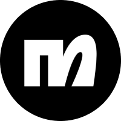
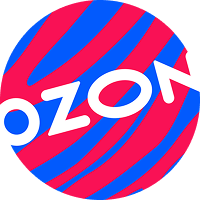
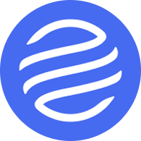
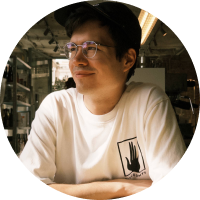
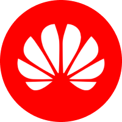
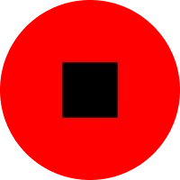

I design and build products because I like simplifying in-product experiences so people can have more time for something meaningful.
My favorite part of the process is figuring out how to make interface simple despite all business/tech/user limitations and pitching it to my peers.
As a designers I'm closer to development than to user research, I code myself and build live prototypes to pitch my ideas.
Before that, I studied computational linguistics and product management, worked as a business development manager and presentation designer. All that helps me to be a better designer.


In 2021 redesigned Ozon Advertising Platform and led the team of two designers in Russia's second biggest online-marketplace Ozon
View before/after →I joined Russia's second biggest online-marketplace Ozon to update the design Ozon Advertising Platform. It is a web application for sellers to promote their goods inside and outside the marketplace. My main focus alongside designing new features was to define main issues, redesign components and update quite outdated interface step-by-step without radical redesign. Thanks to the visible impact of my design projects, I was given the opportunity to hire and lead a team of two product designers until my departure in 2022.

In 2020 led all presentation design for IT department, from animated prototypes to keynote delivery at Gazprombank

In 2019 designed presentations and coached keynote delivery for major Russian tech companies like Yandex, Ozon, Lamoda, and several startups

In 2018 managed smartphone sales, marketing, and supply for federal retail channels at Huawei Russia

In 2017 combined sales and product management at Russia's biggest mobile app development studio Redmadrobot